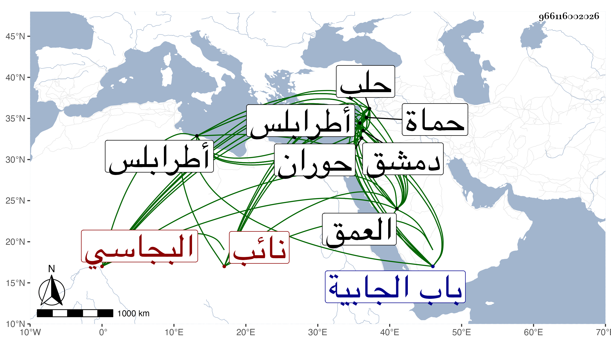

0902Sakhawi.DawLamic.ITO20230111-ara1.EIS1600.966116002026
Biography ID: 966116002026
125
تاني بك البجاسي نائب دمشق . تنقل في الخدم أيام مولاه الناصر فرج وولي نيابة حماة في أيام المؤيد سنة سبع عشرة ثم كان فيمن خامر مع قانباي فلما انكسروا هرب إلى التركمان فسار أقباي وراءه إلى العمق فانهزم إلى بلاد الروم ، فلما مات المؤيد دخل دمشق فولاه ططر نيابة حماة ثم نقله بعد سلطنته إلى طرابلس ثم قرر أيام ابنه الصالح في نيابة حلب وسار لقتال نائبها قبله وهو تغرى بردي من قصروه لعصيانه ، ثم نقل في أيام الاشرف إلى نيابة دمشق بعد موت تاني بك ميق الآتي بعده ثم بلغ السلطان عنه شيء فكتب إلى الحاجب بالركوب عليه فركبوا وقاتلوه فانكسروا منه ودخل إلى دار العدل مظهرا الاحسان والمخامرة على السلطان فجهز له سودون من عبد الرحمن في عسكر فلما بلغه خرج إليهم فانكسروا منه مع تغيب خيول من معه ، وسار في أثرهم إلى أن جاز باب الجابية فسقطت رجل فرسه في حفرة من القناة فوفع فأمسكوه فأمر بقتله فقتل بدمشق بقلعتها في ربيع الاول سنة سبع وعشرين ، وكان كثير الحياء والشجاعة والشفقة ، وقد أحسن في تلك السنة إلى الحاج لما رجعوا فانهم لقوا مشقة عظيمة بتراكم الرياح بحوران فخرج إليهم بنفسه ومعه أنواع الزاد حتى البغال وفرق ذلك عليهم فانتفع الغني والفقير وأفرطوا في الدعاء له فكان عاقبته الشهادة سامحه الله . ذكره شيخنا في إنبائه وابن خطيب الناصرية .
